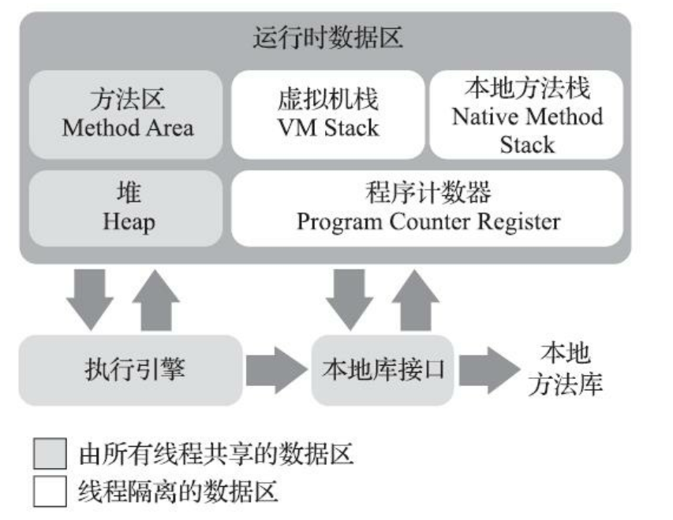

Java内存区域
运行时数据区域
Java 虚拟机所管理的内存主要包括以下五个运行时区域：
- 程序计数器（Program Counter Register）
- 虚拟机栈（VM Stack）
- 本地方法栈（Native Method Stack）
- 方法区（Method Area）
- 堆（Heap）
其中，每个线程都会有自己的 程序计数器、虚拟机栈 和 本地方法栈。堆 和 方法区 由所有线程共享。

程序计数器
程序计数器可以看作是当前线程所执行的字节码的行号指示器。每个线程都有自己的程序计数器，以便线程切换后相应线程能恢复到正确的执行位置。
如果线程正在执行的是一个 Java 方法，这个计数器记录的是正在执行的虚拟机字节码指令的地址；如果正在执行的是本地 (Native) 方法，这个计数器值则应为空。
程序计数器是唯一一个没有规定任何 OutOfMemoryError 情况的区域。
Java 虚拟机栈
Java 虚拟机栈描述的是 Java 方法执行的线程内存模型。每个方法执行的时候，Java 虚拟机都会同步创建一个栈帧（Stack Frame）用于存储局部变量表、操作数栈、动态连接、方法出口等信息。每一个方法被调用直至执行完毕的过程，就对应着一个栈帧在虚拟机栈中从入栈到出栈的过程。
局部变量表存放了编译器可知的各种 Java 虚拟机基本数据类型（ boolean, byte, char, short, int, float, long, double）、对象引用（reference 类型）和 returnAddress 类型（指向了一条字节码指令的地址）。
这些数据类型再局部变量表中的存储空间以局部变量槽（Slot）来表示，其中64位的long 和 double 类型的数据会占用两个变量槽，其余数据类型占用一个变量槽。局部变量表所需的内存空间在编译期间完成分配。在方法运行期间不会改变局部变量表的大小（这里的 “大小” 是指变量槽的数量）。
Java 虚拟机栈会有两类异常状况：
- 如果线程请求的栈深度大于虚拟机所允许的深度，将会抛出 StackOverflowError 异常
- 如果线程申请栈空间 或 栈扩展（要注意HotSpot虚拟机的栈容量不可以动态扩展）失败时，会抛出 OutOfMemoryError 异常。
本地方法栈
本地方法栈 与 Java虚拟机栈所发挥的作用很相似，区别是虚拟机栈为虚拟机执行 Java 方法服务，而本地方法栈为虚拟机用到的本地（Native）方法服务。
Java 堆
Java 堆是被所有线程共享的一块内存区域，在虚拟机启动时创建。
方法区
运行时常量池
直接内存
Java对象的分配、布局和访问
sdf